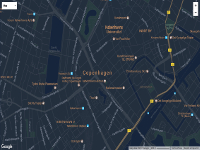
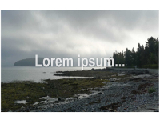
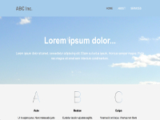

Some of my web projects.
|  | A basic map using night mode styling. (source) |
|  | An example of parallax scrolling. The background (image) moves slower than the foreground (text) by using background-attachment: fixed. (source)
|
|  | A responsive web design example with fluid layout. This is accomplished using percentage width measurements and media queries. (source) |